| |
Knotts Boysenberry Festival 2025
 OK. It's that time of year again. The best time to visit Knotts Berry Farm. That's right. It's Boysenberry Festival time! =) And yeah. It still is a great time to visit with a lot of great food. And.....our first visit results in a long pain in the ass visit to Guest Services to upgrade Jason's pass since.....he may have had a Diamond Membership, but that only applied to the legacy Six Flags parks, and we still had to take care of that. And......god f*cking damn it. Doing so was such a giant pain in the ass.
OK. It's that time of year again. The best time to visit Knotts Berry Farm. That's right. It's Boysenberry Festival time! =) And yeah. It still is a great time to visit with a lot of great food. And.....our first visit results in a long pain in the ass visit to Guest Services to upgrade Jason's pass since.....he may have had a Diamond Membership, but that only applied to the legacy Six Flags parks, and we still had to take care of that. And......god f*cking damn it. Doing so was such a giant pain in the ass.
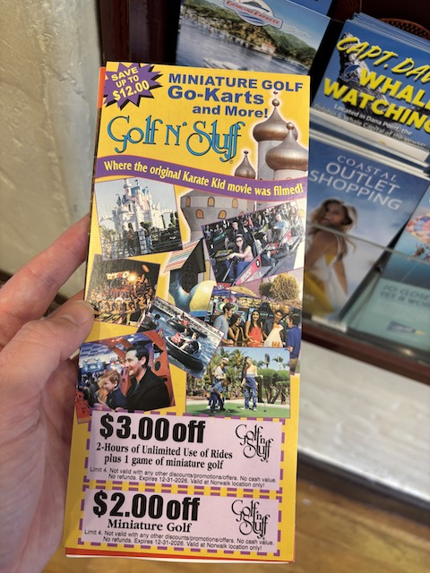
HOLY SH*T!!! They have brocures for freaking Golf'N'Stuff at Knotts! Didn't think this was big enough to warrent those. Aww, getting flashbacks to living in Ventura seeing these and being reminded of Golf'N'Stuff.
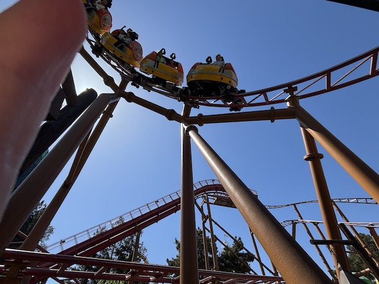
Yeah. I still hadn't ridden Sierra Sidewinder since before my dry spell. Time to pop back on that.
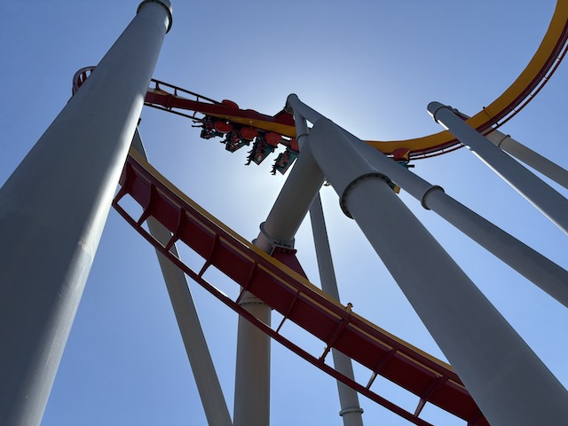
And of course, time to hop on the more adult coasters of the park.
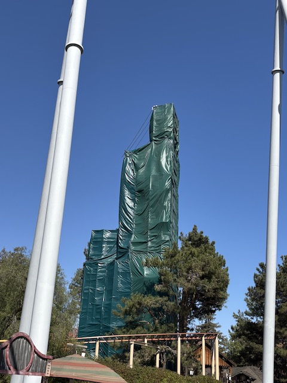
Hmm. Still no update on Montezoomas Revenge.
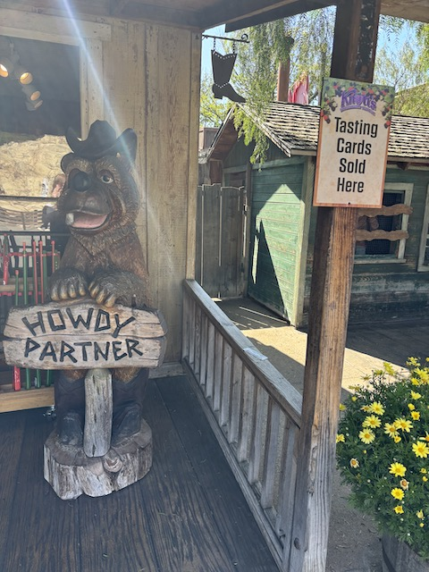
Howdy partner! You looking to buy the tasting cards for the Boysenberry Festival? Well, you're in luck!
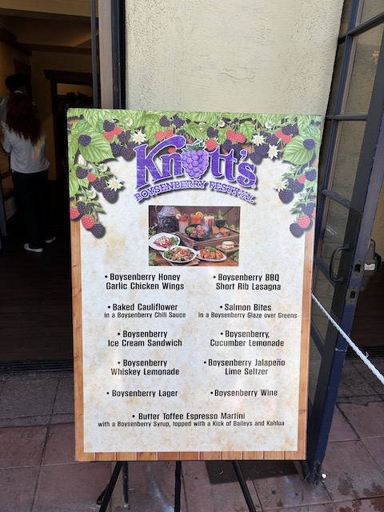
*Sigh* The one thing that really frustrates me is.....the tasting cards have gotten FAR more expensive. Honestly, the tasting cards have nearly DOUBLED in price compared to the early days of the Festival. It at first seemed like you were really getting a great deal. Nowadays, it's gotten so expensive it feels like there's honestly not much more of a difference in getting the card vs buying each item individually. I know prices were also this bad last year, but it didn't sting as much since I wasn't buying them. Yeah. Still worth buying them for me since.....I love the Boysenberry Festival and there's still a ton of great food options. But it doesn't feel like a bargain like during the early Boysenberry Festivals.
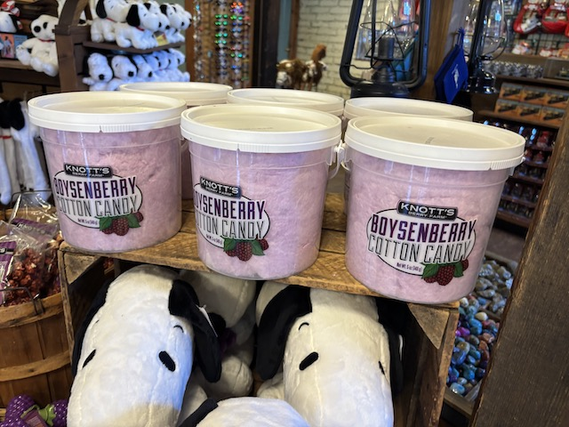
Unfortunately, the Boysenberry Cotton Candy is NOT included on the tasting card. Hmm, maybe they should offer that some year.
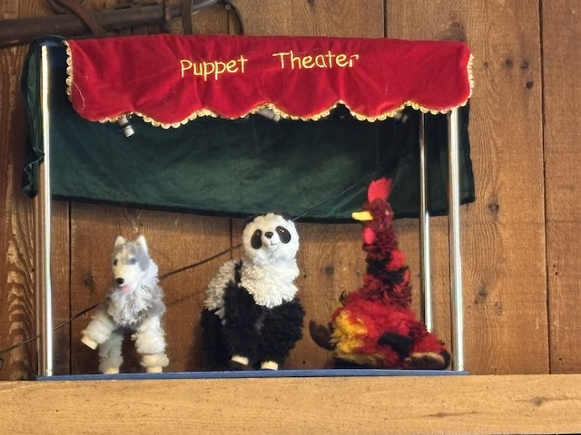
Must avoid being hypnotized by creepy Knotts puppets. Must look away. Can't resist.
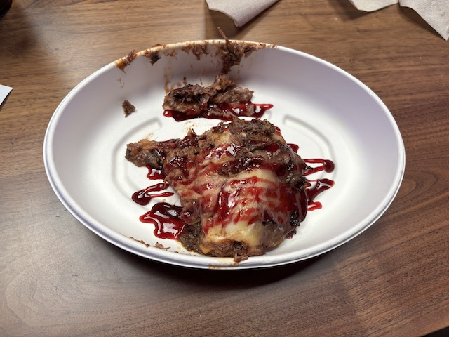
First off, Boysenberry Shortrib Lasagna. This was one of the items I was really looking foreward to. And on the one hand, it was really good. But on the other hand, it didn’t really feel like lasagna. I felt like it was leaning more into the Short Rib meat, as opposed to the usual cheese taste. So I guess this gets a weird.....fails to meet my expectations, but still gets a thumbs up award.
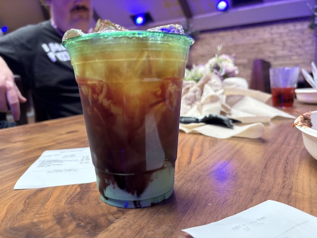
Onto Item #2. Butter Toffee Boysenberry Martini with Baileys. Every Boysenberry Festival, we have to order something alcoholic since.....we normally avoid booze at the parks (plus, the one exception to the not a difference in buying each item individually is in the booze). At first, I really didn’t like this. I initially thought that I f*cked up, and it sounded good, but nope. I'm an idiot who can't decipher which alcoholic drinks are good and which ones aren't. But actually, nope. It turned out to be good after I stirred it. The only thing wrong was that the employee wound up not doing a very good job of stirring the drink. Very good cocktail. Thumbs up.
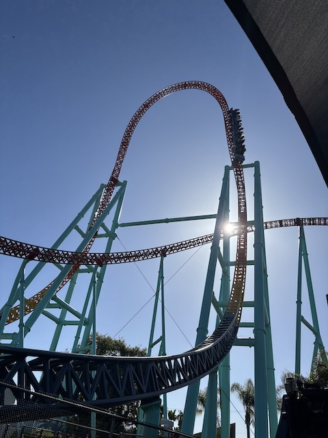
I know Boysenberry Festival is all about the cool and wacky foods they only bring out for the festival. But this is still IncredibleCOASTERS. So....still gotta ride Knotts best coaster. ;)
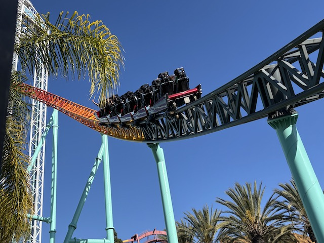
Really concerned for this ride after the recent coaster genocide spree that Cedar Flags has been engaging in.
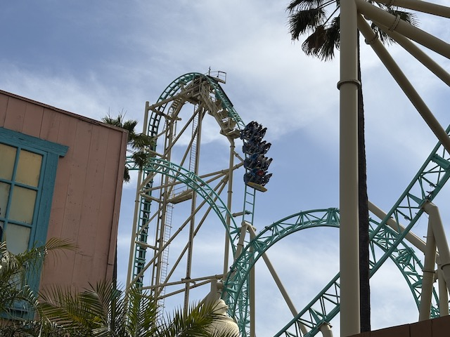
Very happy that this wasn't just an amazing food visit, but also got me riding all the best coasters in the park as well. Thank you not visiting on a mobbed day (AKA, visiting after Spring Break). =)
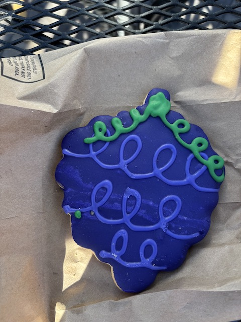
While riding HangTime, Jason bought me a Boysenberry Cookie. This wasn’t a special Boysenberry Festival item. It’s just a cookie shaped like a boysenberry. I know that this’ll sound weird. But I swear to god. This tasted EXACTLY like the cookies my Grandma used to give me from the local bakery. So it was not only good, but also nostalgic.
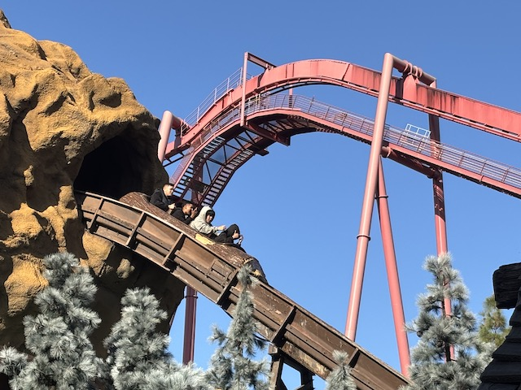
Don't stand and cheer for all these cool Boysenberry items. You folks need to SIT DOWN!!!
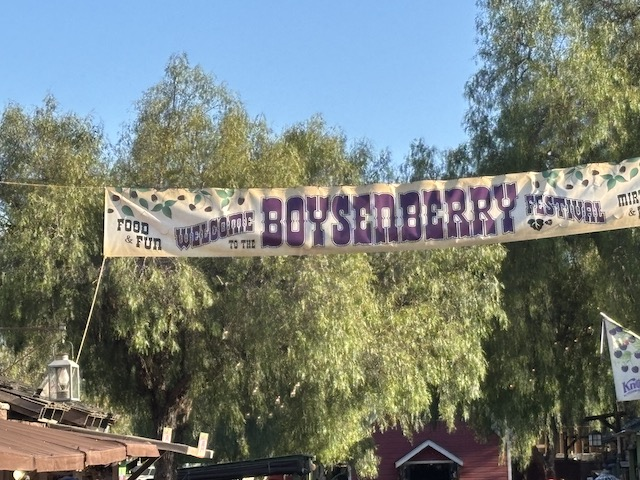
I love the Boysenberry Festival.
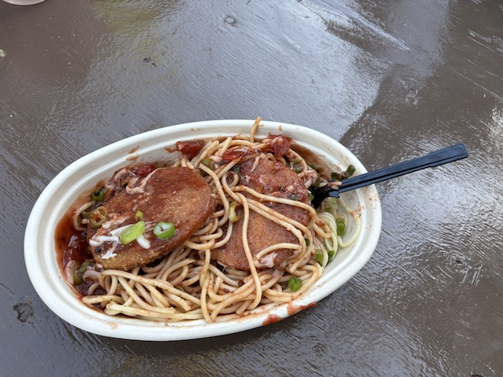
OK. Onto Item #3. Boysenberry Chicken Parmesean. Honestly, this was dissapointing. I know I’m a big fan of Chicken Parmesean. But……it just tasted like cheap spaghetti with a school cafeteria chicken patty, with a boysenberry thrown in. It just felt lazy and was the biggest dissapointment. Least favorite item from this years Boysenberry Festival. Thumbs down. Do not recommend. =(
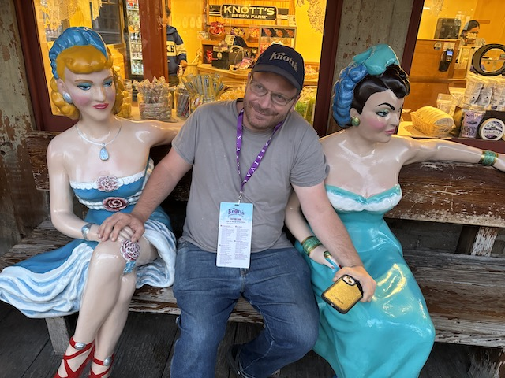
"Hey homophobic Grandma! The proposed conversion therapy worked! I no longer live in sin! I'm straight now! Just look at these chicks I picked up!"
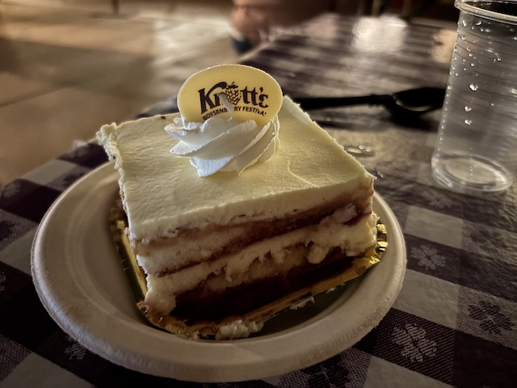
So for my Boysenberry Dessert tonight, I was torn between two items. I couldn't decide. So I agreed to get one, Jason would get the other, and we'd split both in half, getting half of each, so we could both try both items. Anyways, Item #4. Boysenberry Tiramisu. THIS WAS GOOD!!! REALLY GOOD!!!! First off, I’m a BIG FAN of Tiramisu. Really loved having authentic Tiramisu in Rome. And this had a mild boysenberry taste that gave it a nice twist, without overwhelming it. This really felt like a classic Boysenberry Festival item.
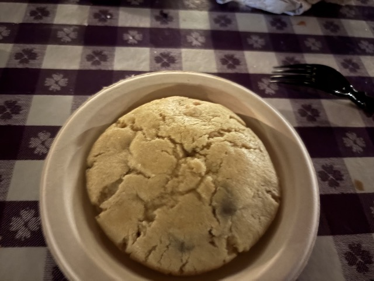
And then there's Item #5. Boysenberry Pie Stuffed Cookie. Eh. This sounds really funky and weird, but so intriguing. Hence, my indecisiveness between this and the Boysenberry Tiramisu. And yeah. It’s good. It’s basically a giant cookie with some boysenberry filling. Yeah. It’s really good. A giant high quality soft cookie, with some tasty filling inside. Thumbs up, but I think my imagination got carried away. I definately prefer the Boysenberry Tiramisu.
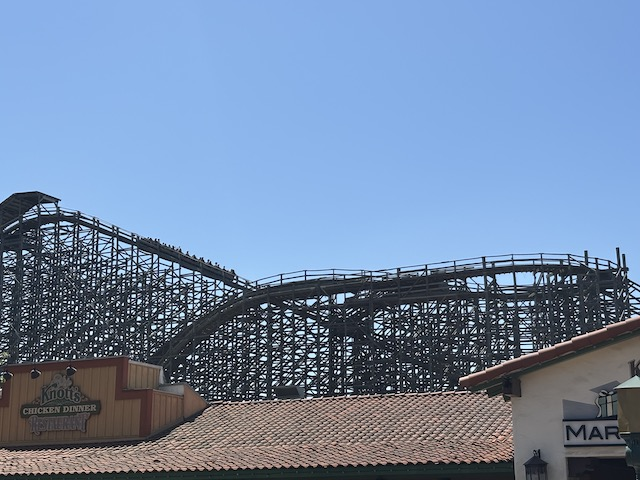
We even managed to get on Ghostrider despite the long line, since.....AJ prioritizes it. And....I'm glad we did. Cause I keep forgetting how good this ride is since I so often forgoe it.
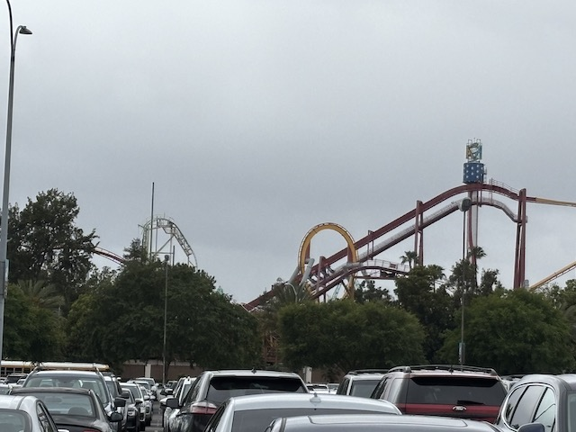
All right. I couldn't finish an entire tasting card in one visit. So we have returned for a 2nd visit so I can finish off my tasting card since.....I am NOT wasting a single item unlike in previous years.
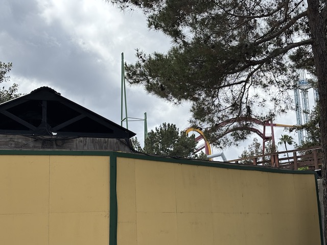
HOLY SH*T!!! I SEE PROGRESS ON MONTEZOOMAS REVENGE!!!
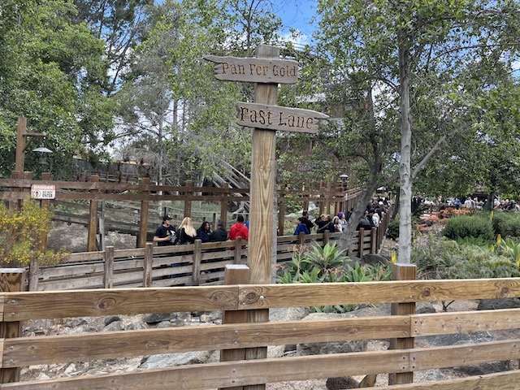
Ghostrider is MOBBED. Like usual.
This really is the best time of the year to visit Knotts Berry Farm.
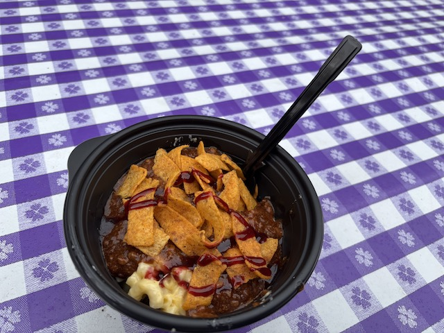
Resuming our tasting card brigade, we have Item #6. The Boysenberry Chilli over Mac & Cheese. This was good. The Boysenberry Chilli was REALLY good. This honestly was REALLY strong chilli. This could've been served alone and I would've been super happy and satisfied. Though honestly, the Mac & Cheese portion felt kind of like Kraft. Imagine I got amazing Boysenberry Chilli, took it home cause I was full, heated it up, and mixed it with generic storebrand Kraft Mac & Cheese. Yeah. That's EXACTLY what this tasted like. It was good. But the Boysenberry Habanero Mac & Cheese from 2019 still reigns supreme.
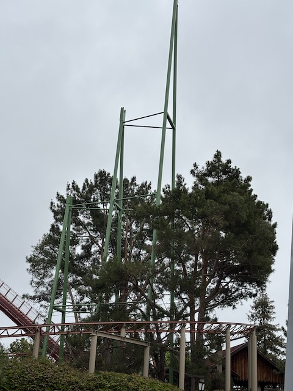
So yeah. They finally have taken off the tarps and rebuild the supports. So happy to have confirmation that the project is NOT dead and that Montezoomas Revenge WILL reopen. HOPEFULLY during this summer since.....it's been delayed enough already.
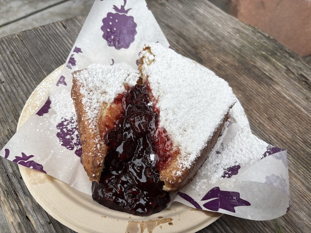
And finally, we have Item #7. Deep Fried Boysenberry French Toast with Boysenberry Cream Cheese. This was something that was raved about, and everyone praised. So I was intigued and decided to tryit. And....yeah. It was good. But it also wasn’t my favorite. Not because it was bad. It just.....tasted like how I expected it to taste. I guess I should've listened to my gut and not the hype since my gut was far more accurate than the hype. Yes, it was pretty good. But.....not my favorite. If you like French Toast, this is your food. Also, this was FILLING!!! FAR MORE than your average Boysenberry Festival dessert. Just keep that in mind.
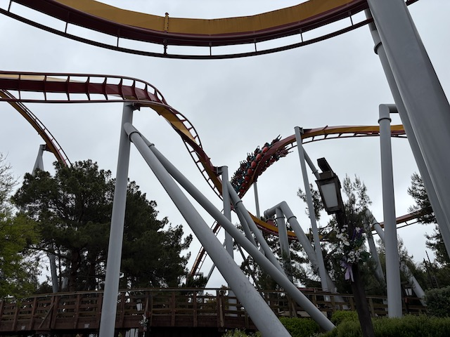
Hoping I can get a quick ride on any major coaster before I have to leave for work.
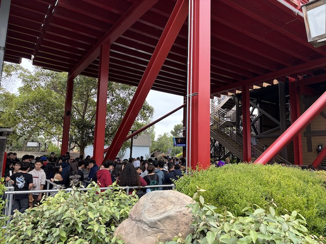
F*CK THAT!!!! I AM NOT WAITING IN THAT LINE FOR SILVER BULLET!!! ESPECIALLY WHEN DOING SO WOULD RISK ME RUNNING LATE FOR WORK!!! *Sigh* And that concludes the 2025 Boysenberry Festival. While again, not the best Boysenberry Festival (2019 still ranks as my favorite year for the Boysenberry Festival), it still was another really good year. Sure, I may have been frustrated about price hikes and not getting as good of a deal as I felt in previous years, but I still had a really fun time, riding all the major rides on my primary visit, and trying a ton of really good food items. Looking foreward to checking out the 2026 Boysenberry Festival.
Home
|